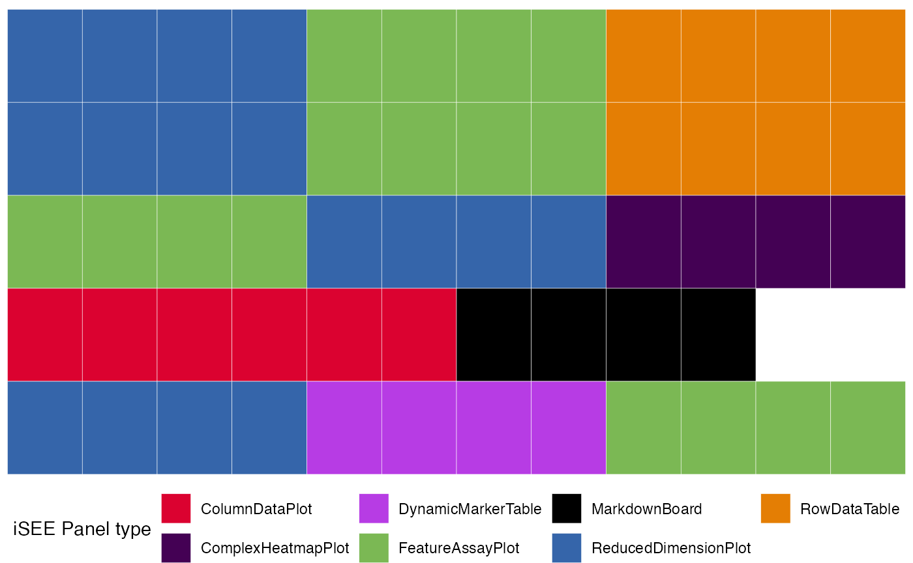
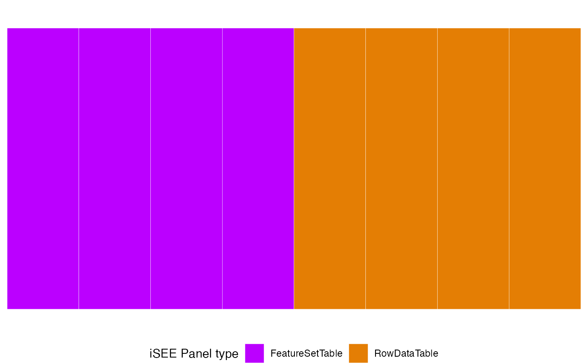
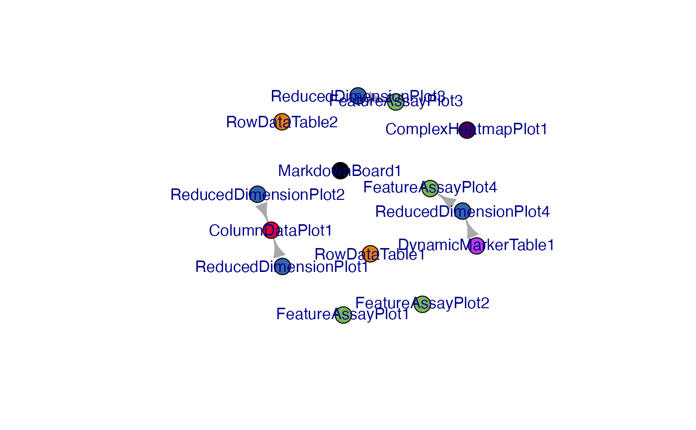
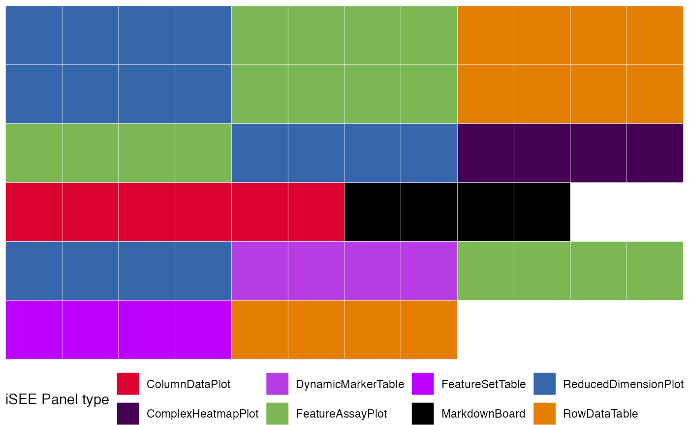

The `iSEEfier` User's Guide
Najla Abassi
Institute of Medical Biostatistics, Epidemiology and Informatics (IMBEI), Mainznajla.abassi@uni-mainz.de
Federico Marini
Institute of Medical Biostatistics, Epidemiology and Informatics (IMBEI), MainzResearch Center for Immunotherapy (FZI), Mainzmarinif@uni-mainz.de
25 July 2025
Source:vignettes/iSEEfier_userguide.Rmd
iSEEfier_userguide.RmdIntroduction
This vignette describes how to use the iSEEfier
package to configure various initial states of iSEE instances, in order
to simplify the task of visualizing single-cell RNA-seq, bulk RNA-seq
data, or even your proteomics data in iSEE. In the
remainder of this vignette, we will illustrate the main features of
r BiocStyle::Biocpkg("iSEEfier") on a publicly available
dataset from Baron et al. “A Single-Cell Transcriptomic Map of the Human
and Mouse Pancreas Reveals Inter- and Intra-cell Population Structure”,
published in Cell Systems in 2016. doi:10.1016/j.cels.2016.08.011.
The data is made available via the scRNAseq
Bioconductor package. We’ll simply use the mouse dataset, consisting of
islets isolated from five C57BL/6 and ICR mice. # Getting started
{#gettingstarted} To install iSEEfier
package, we start R and enter:
if (!requireNamespace("BiocManager", quietly = TRUE))
install.packages("BiocManager")
BiocManager::install("iSEEfier")Once installed, the package can be loaded and attached to the current workspace as follows:
Create an initial state for gene expression visualization using
iSEEinit()
When we have all input elements ready, we can create an
iSEE initial state by running:
iSEEinit(sce = sce_obj,
features = feature_list,
reddim.type = reduced_dim,
clusters = cluster,
groups = group,
add_markdown_panel = FALSE)To configure the initial state of our iSEE instance
using iSEEinit(), we need five parameters:
-
sce: ASingleCellExperimentobject. This object stores information of different quantifications (counts, log-expression…), dimensionality reduction coordinates (t-SNE, UMAP…), as well as some metadata related to the samples and features. We’ll start by loading thesceobject:
library("scRNAseq")
sce <- BaronPancreasData('mouse')
sce
#> class: SingleCellExperiment
#> dim: 14878 1886
#> metadata(0):
#> assays(1): counts
#> rownames(14878): X0610007P14Rik X0610009B22Rik ... Zzz3 l7Rn6
#> rowData names(0):
#> colnames(1886): mouse1_lib1.final_cell_0001 mouse1_lib1.final_cell_0002
#> ... mouse2_lib3.final_cell_0394 mouse2_lib3.final_cell_0395
#> colData names(2): strain label
#> reducedDimNames(0):
#> mainExpName: NULL
#> altExpNames(0):Let’s add the normalized counts
library("scuttle")
sce <- logNormCounts(sce)Now we can add different dimensionality reduction coordinates
Now our sce is ready, we can move on to the next
argument.
-
features: which is a vector or a dataframe containing the genes/features of interest. Let’s say we would like to visualize the expression of some genes that were identified as marker genes for different cell population.
gene_list <- c("Gcg", # alpha
"Ins1") # beta-
reddim_type: In this example we decided to plot our data as a t-SNE plot.
reddim_type <- "TSNE"-
clusters: Now we specify what clusters/cell-types/states/samples we would like to color/split our data with
# cell populations
cluster <- "label" #the name should match what's in the colData names-
groups: Here we can add the groups/conditions/cell-types
# ICR vs C57BL/6
group <- "strain" #the name should match what's in the colData namesWe can choose to include in this initial step a
MarkdownBoard by setting the arguments
add_markdown_panel to TRUE. At this point, all
the elements are ready to be transferred into
iSEEinit()
initial1 <- iSEEinit(sce = sce,
features = gene_list,
clusters = cluster,
groups = group,
add_markdown_panel = TRUE)In case our features parameter was a data.frame, we
could assign the name of the column containing the features to the
gene_id parameter.
Now we are one step away from visualizing our list of genes of
interest. All that’s left to do is to run iSEE with the
initial state created with iSEEinit()
This instance, generated with iSEEinit(), returns a
combination of panels, linked to each other, with the goal of
visualizing the expression of certain marker genes in each cell
population/group:
- A
ReducedDimensionPlot,FeatureAssayPlotandRowDataTablefor each single gene infeatures. - A
ComplexHeatmapPlotwith all genes infeatures - A
ColumnDataPlotpanel - A
MarkdownBoardpanel
Create an initial state for feature sets exploration using
iSEEnrich()
Sometimes it is interesting to look at some specific feature sets and
the associated genes. That’s when the utility of iSEEnrich
becomes apparent. We will need 4 elements to explore feature sets of
interest:
-
sce: A SingleCellExperiment object -
collection: A character vector specifying the gene set collections of interest (it is possible to use GO or KEGG terms) -
gene_identifier: A character string specifying the identifier to use to extract gene IDs for the organism package. This can be “ENS” for ENSEMBL ids, “SYMBOL” for gene names… -
organism: A character string of theorg.*.eg.dbpackage to use to extract mappings of gene sets to gene IDs. -
reddim_type: A string vector containing the dimensionality reduction type -
clusters: A character string containing the name of the clusters/cell-type/state…(as listed in the colData of the sce) -
groups: A character string of the groups/conditions…(as it appears in the colData of the sce)
GO_collection <- "GO"
Mm_organism <- "org.Mm.eg.db"
gene_id <- "SYMBOL"
cluster <- "label"
group <- "strain"
reddim_type <- "PCA"Now let’s create this initial setup for iSEE using
iSEEnrich()
results <- iSEEnrich(
sce = sce,
collection = GO_collection,
gene_identifier = gene_id,
organism = Mm_organism,
clusters = cluster,
reddim_type = reddim_type,
groups = group
)iSEEnrich will specifically return a list with the
updated sce object and its associated initial
configuration. To start the iSEE instance we run:
iSEE(results$sce, initial = results$initial)Create an initial state for marker gene exploration using
iSEEmarker()
In many cases, we are interested in determining the identity of our
clusters, or further subset our cells types. That’s where
iSEEmarker() comes in handy. Similar to
iSEEinit(), we need the following parameters:
-
sce: aSingleCellExperimentobject -
clusters: the name of the clusters/cell-type/state -
groups: the groups/conditions -
selection_plot_format: the class of the panel that we will be using to select the clusters of interest.
initial3 <- iSEEmarker(
sce = sce,
clusters = cluster,
groups = group,
selection_plot_format = "ColumnDataPlot")This function returns a list of panels, with the goal of visualizing
the expression of marker genes selected from the
DynamicMarkerTable in each cell cell type. Unlike
iSEEinit(), which requires us to specify a list of genes,
iSEEmarker() utilizes the DynamicMarkerTable
that performs statistical testing through the findMarkers()
function from the scran
package. To start exploring the marker genes of each cell type with
iSEE, we run:
iSEE(sce, initial = initial3)Visualize a preview of the initial configurations with
view_initial_tiles()
Previously, we successfully generated three distinct initial
configurations for iSEE. However, understanding the expected content of
our iSEE instances is not always straightforward. That’s when we can use
view_initial_tiles(). We only need as an input the initial
configuration to obtain a graphical visualization of the expected the
corresponding iSEE instance:
library(ggplot2)
view_initial_tiles(initial = initial1)
view_initial_tiles(initial = results$initial)
Visualize network connections between panels with
view_initial_network()
As some of these panels are linked to each other, we can visualize
these networks with view_initial_network(). Similar to
iSEEconfigviewer(), this function takes the initial setup
as input: This function always returns the igraph object
underlying the visualizations that can be displayed as a side
effect.
library("igraph")
library("visNetwork")
g1 <- view_initial_network(initial1, plot_format = "igraph")
g1
#> IGRAPH f9aee4a DN-- 11 3 --
#> + attr: name (v/c), color (v/c)
#> + edges from f9aee4a (vertex names):
#> [1] ReducedDimensionPlot1->ColumnDataPlot1
#> [2] ReducedDimensionPlot2->ColumnDataPlot1
#> [3] ReducedDimensionPlot3->FeatureAssayPlot3
initial2 <- results$initial
g2 <- view_initial_network(initial2, plot_format = "visNetwork")Merge different initial configurations with
glue_initials()
Sometimes, it would be interesting to merge different
iSEE initial configurations to visualize all different
panel in the same iSEE instance.
merged_config <- glue_initials(initial1,initial2)We can then preview the content of this initial configuration
view_initial_tiles(merged_config)
Related work
The idea of launching iSEE() with some specific
configuration is not entirely new, and it was covered in some use cases
by the mode_ functions available in the iSEEu
package. There, the user has access to the following:
-
iSEEu::modeEmpty()- this will launchiSEEwithout any panels, and let you build up the configuration from the scratch. Easy to start, easy to build. -
iSEEu::modeGating()- this will openiSEEwith multiple chain-linked FeatureExpressionPlot panels, just like when doing some in silico gating. This could be a very good fit if working with mass cytometry data. -
iSEEu::modeReducedDim()-iSEEwill be ready to compare multiple ReducedDimensionPlot panels, which is a suitable option to compare the views resulting from different embeddings (and/or embeddings generated with slightly different parameter configurations). Themodes directly launch an instance ofiSEE, whereas the functionality in iSEEfier is rather oriented to obtain more tailored-to-the-data-at-handinitialobjects, that can subsequently be passed as an argument to theiSEE()call. We encourage users to submit suggestions about their “classical ways” of usingiSEEon their data - be that by opening an issue or already proposing a Pull Request on GitHub.
Session info
sessionInfo()
#> R version 4.5.0 (2025-04-11)
#> Platform: aarch64-apple-darwin20
#> Running under: macOS Ventura 13.6
#>
#> Matrix products: default
#> BLAS: /Library/Frameworks/R.framework/Versions/4.5-arm64/Resources/lib/libRblas.0.dylib
#> LAPACK: /Library/Frameworks/R.framework/Versions/4.5-arm64/Resources/lib/libRlapack.dylib; LAPACK version 3.12.1
#>
#> locale:
#> [1] en_US.UTF-8/en_US.UTF-8/en_US.UTF-8/C/en_US.UTF-8/en_US.UTF-8
#>
#> time zone: Europe/Berlin
#> tzcode source: internal
#>
#> attached base packages:
#> [1] stats4 stats graphics grDevices utils datasets methods
#> [8] base
#>
#> other attached packages:
#> [1] visNetwork_2.1.2 igraph_2.1.4
#> [3] scater_1.35.4 ggplot2_3.5.2
#> [5] scuttle_1.17.0 scRNAseq_2.21.1
#> [7] SingleCellExperiment_1.29.2 SummarizedExperiment_1.37.0
#> [9] Biobase_2.67.0 GenomicRanges_1.59.1
#> [11] GenomeInfoDb_1.43.4 IRanges_2.41.3
#> [13] S4Vectors_0.45.4 BiocGenerics_0.53.6
#> [15] generics_0.1.3 MatrixGenerics_1.19.1
#> [17] matrixStats_1.5.0 iSEEfier_1.3.0
#> [19] BiocStyle_2.35.0
#>
#> loaded via a namespace (and not attached):
#> [1] splines_4.5.0 later_1.4.2 BiocIO_1.17.2
#> [4] bitops_1.0-9 filelock_1.0.3 tibble_3.2.1
#> [7] XML_3.99-0.18 lifecycle_1.0.4 httr2_1.1.2
#> [10] doParallel_1.0.17 lattice_0.22-7 ensembldb_2.31.0
#> [13] alabaster.base_1.7.8 magrittr_2.0.3 sass_0.4.10
#> [16] rmarkdown_2.29 jquerylib_0.1.4 yaml_2.3.10
#> [19] httpuv_1.6.15 DBI_1.2.3 RColorBrewer_1.1-3
#> [22] abind_1.4-8 Rtsne_0.17 AnnotationFilter_1.31.0
#> [25] RCurl_1.98-1.17 rappdirs_0.3.3 circlize_0.4.16
#> [28] GenomeInfoDbData_1.2.14 ggrepel_0.9.6 irlba_2.3.5.1
#> [31] alabaster.sce_1.7.0 pkgdown_2.1.1 iSEEhex_1.9.0
#> [34] codetools_0.2-20 DelayedArray_0.33.6 DT_0.33
#> [37] tidyselect_1.2.1 shape_1.4.6.1 farver_2.1.2
#> [40] UCSC.utils_1.3.1 viridis_0.6.5 ScaledMatrix_1.15.0
#> [43] shinyWidgets_0.9.0 BiocFileCache_2.15.1 GenomicAlignments_1.43.0
#> [46] jsonlite_2.0.0 GetoptLong_1.0.5 BiocNeighbors_2.1.3
#> [49] iterators_1.0.14 systemfonts_1.2.2 foreach_1.5.2
#> [52] tools_4.5.0 ragg_1.4.0 Rcpp_1.0.14
#> [55] glue_1.8.0 gridExtra_2.3 SparseArray_1.7.7
#> [58] BiocBaseUtils_1.9.0 xfun_0.52 mgcv_1.9-3
#> [61] dplyr_1.1.4 HDF5Array_1.35.16 gypsum_1.3.0
#> [64] shinydashboard_0.7.2 withr_3.0.2 BiocManager_1.30.25
#> [67] fastmap_1.2.0 rhdf5filters_1.19.2 shinyjs_2.1.0
#> [70] rsvd_1.0.5 digest_0.6.37 R6_2.6.1
#> [73] mime_0.13 textshaping_1.0.0 colorspace_2.1-1
#> [76] listviewer_4.0.0 RSQLite_2.3.9 h5mread_0.99.4
#> [79] hexbin_1.28.5 FNN_1.1.4.1 rtracklayer_1.67.1
#> [82] httr_1.4.7 htmlwidgets_1.6.4 S4Arrays_1.7.3
#> [85] org.Mm.eg.db_3.21.0 uwot_0.2.3 iSEE_2.19.3
#> [88] pkgconfig_2.0.3 gtable_0.3.6 blob_1.2.4
#> [91] ComplexHeatmap_2.23.1 XVector_0.47.2 htmltools_0.5.8.1
#> [94] bookdown_0.42 ProtGenerics_1.39.2 rintrojs_0.3.4
#> [97] clue_0.3-66 scales_1.3.0 alabaster.matrix_1.7.8
#> [100] png_0.1-8 knitr_1.50 rstudioapi_0.17.1
#> [103] rjson_0.2.23 nlme_3.1-168 curl_6.2.2
#> [106] shinyAce_0.4.4 cachem_1.1.0 rhdf5_2.51.2
#> [109] GlobalOptions_0.1.2 BiocVersion_3.21.1 parallel_4.5.0
#> [112] miniUI_0.1.1.1 vipor_0.4.7 AnnotationDbi_1.69.1
#> [115] restfulr_0.0.15 desc_1.4.3 pillar_1.10.2
#> [118] grid_4.5.0 alabaster.schemas_1.7.0 vctrs_0.6.5
#> [121] promises_1.3.2 BiocSingular_1.23.0 dbplyr_2.5.0
#> [124] iSEEu_1.19.0 beachmat_2.23.7 xtable_1.8-4
#> [127] cluster_2.1.8.1 beeswarm_0.4.0 evaluate_1.0.3
#> [130] GenomicFeatures_1.59.1 cli_3.6.5 compiler_4.5.0
#> [133] Rsamtools_2.23.1 rlang_1.1.6 crayon_1.5.3
#> [136] ggbeeswarm_0.7.2 fs_1.6.6 viridisLite_0.4.2
#> [139] alabaster.se_1.7.0 BiocParallel_1.41.5 munsell_0.5.1
#> [142] Biostrings_2.75.4 lazyeval_0.2.2 colourpicker_1.3.0
#> [145] Matrix_1.7-3 ExperimentHub_2.15.0 bit64_4.6.0-1
#> [148] Rhdf5lib_1.29.2 KEGGREST_1.47.1 shiny_1.10.0
#> [151] alabaster.ranges_1.7.0 AnnotationHub_3.15.0 memoise_2.0.1
#> [154] bslib_0.9.0 bit_4.6.0